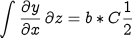

This is a guide to Bryan Lawrence's modified wiki format designated "wikiBNL".
Syntax supported includes:
- Links (local, and external, labelled or otherwise, including images)
- Lists (obviously), including bulleted and enumerated (to four deep)
- Tables
- Highlighting, Italics, Math mode (simple and latex if available)
- Code Higlighting (where source-highlight is also available)
- Preformatted Text and Blockquoting
- Footnotes are supported too 1.
Note that both [ and * can be escaped by using a \ before the [ or *. (Sometimes you'll also need to escape the return ],e.g. in a footnote), but generally not).
Paragraphs are delineated by a blank line.
Links
- Simple local links are done with [WikiFormat] to give you WikiFormat.
- Local links can be renamed using [:WikiFormat local wiki instructions] to give local wiki instructions.
- Remote Links are simply [http:blah] or [http:blah with local label].
- Images are included by using
Bold and Italic Text
You can easily produce bold and italic text using *bold* and a pair of single quotes either side of the required text, e.g.
You can easily produce *bold* and ''italic''
Preformatted Text and Blockquotes
For preformatted text, simply surround your material with [pre and pre] each on their own lines, without following spaces befor the carriage returns, to get [pre exactly [&<what you typed pre]
For Blockquotes, begin the material with a colon in the first column, followed by a space, to get
Something someone else said.
Tables
| one | two | |
| 1 | 2 | 3 |
came from
| one |2 two |
| 1 | 2 | 3 |
Lists
- lists
- can
- go
- four deep
* lists ** can *** go **** four deep
- four deep
- go
- can
Numbered too!
- something
- can
- be numbered
- four deep, and even include preformatted material:
0 something 00 can 000 be numbered 0000 four deep
- four deep, and even include preformatted material:
- be numbered
- can
Image Support
Syntax for adding images is:
[image: static/flag.gif]
resulting in


Or alternatively
[image: static/NotHereYet.jpg picture]
produces

Maths Mode
There are two forms of math mode supported, simple, for inline greek and super and subscripts (e.g. α2 = β3 2, or CO2). This is done using a simple [m: \alpha^2 = \beta^3 _2] syntax.
More complicated expressions can be constructed using the latex syntax if latex is available on your server. The following syntax:
[embed latex
\int \frac{\partial y}{\partial x}\,\partial z =
b*C\frac{1}{2}
embed]
results in
|  |
Embedding Code
Code can be highlighted and optionally numbered, using the source-highlight software if that is available on your server.
def example(argument):
''' commment string '''
r=remote(argument)
if r: return 'string'
return 'another string'
***
highlight file error
***
was done with
[embed code python ... embed]
You can access the source-highlight command line to number lines in python too with
[embed code python -n ... embed]
to get this sort of thing:
def routine: ''' starting comment ''' pass *** highlight file error ***
Misc.
You can access the DOI redirect system with
[doi:10.1038/news050124-10 nature]
to get, for example, a link to a nature paper